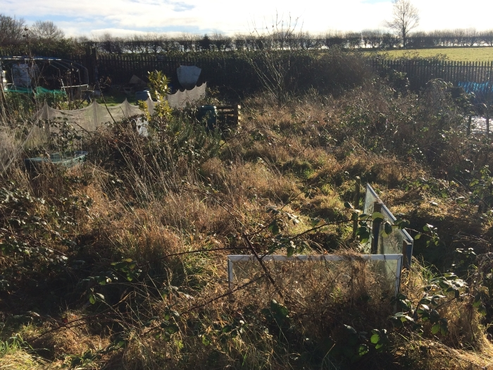
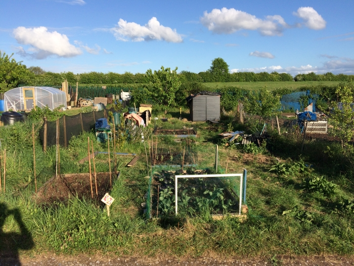
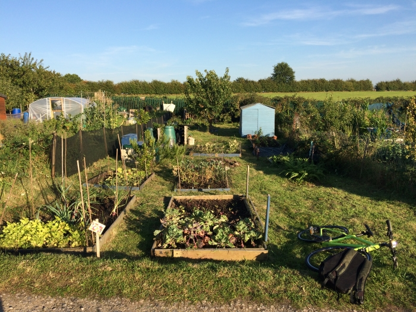
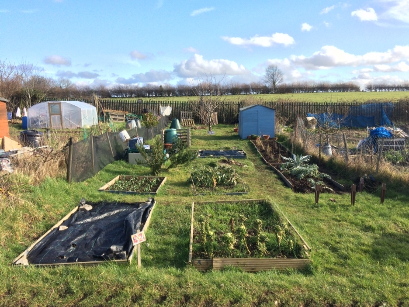
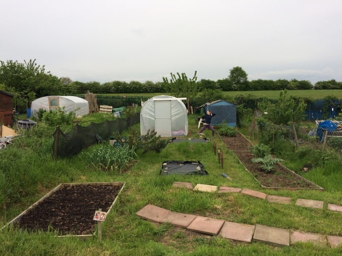
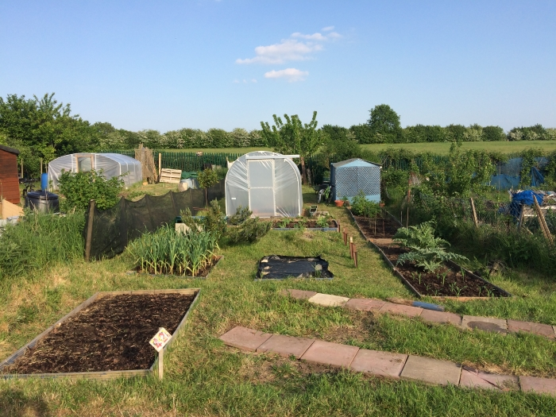
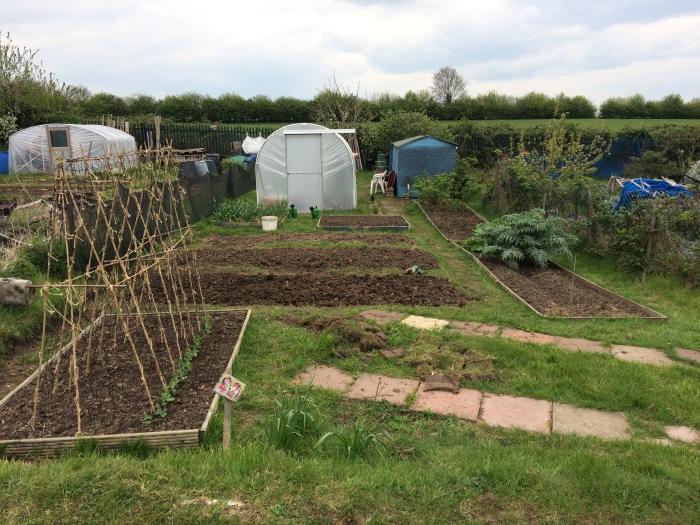
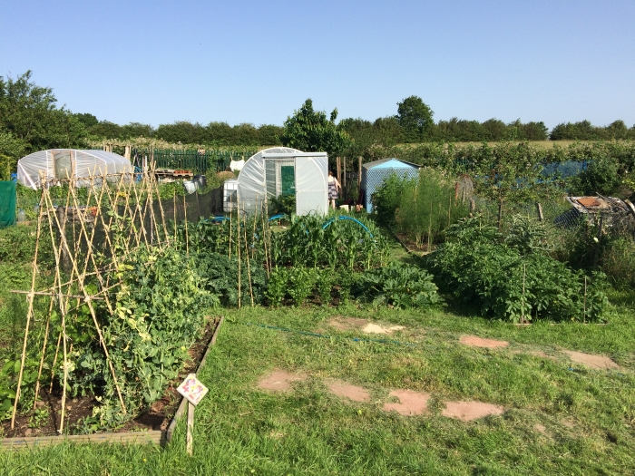

Background
Hello world! My name is Harry, I'm 30 years old and originally from "the north" (of the UK, a little town just north of Manchester called Chorley to be precise).
I currently live in Bristol and have been for the past 7 years; it's a fantastic city on a par with Manchester and has a lot less rain! Prior to Bristol I
gained a masters in Aerospace Engineering at the University of Manchester which enabled me to land a job with Airbus at their Filton site in Bristol,
which should explain the move to the south. My final role in Airbus, which was in the fuel systems modelling and simulation department was the role that made me
see the light on what I want from my future career.
A large portion of my modelling work within Airbus involved writing code to solve bespoke modelling problems, and it was in doing this type of work I realised
I actually love to code (and that I'm not so much interested in aircraft). The problem was that the majority of coding I did at Airbus was within Matlab and I
started to get itchy fingers to explore other coding languages and create a career in tech. To spring board my career into tech I opted to embark on the full
stack web development course at _nology in Bristol. I chose web development as I not only wanted to learn other coding languages but also to have a closer connection
with the product and the people using it, which was something I felt was missing from my work at Airbus. Some would say I'm food motivated but problem solving is
where my heart lies and I hope to see plenty of it in a tech career.
Career
My career so far has been primarily based within the aerospace industry. Having secured a masters in aerospace engineering from the University of Manchester,
I managed to land a job at Airbus and have been working there for the past 7 years. Airbus, for those who don't know, is the largest aircraft manufacturer in
Europe which shares, along with its US competitor Boeing, 99% of the aircraft manufacturing market. Airbus is the producer of the best-selling commercial aircraft
in existence, the A320, and the largest commercial aircraft that has ever graced the skies, the monster that is the A380. As you can tell from my sales pitch it
is an exciting company to work for and getting to see the aircraft up close (from an engineering perspective) really is magnificent.
I started my career at Airbus through their graduate programme working within the landing gear structures department. The scheme duration was 2 years and over that
time, I got to explore the company, experience different teams, visit the final assembly lines and flight test operations and work for one of Airbus' many suppliers
or customers (the airlines). My highlight of the scheme was being the engineer making the final checks on the A320neo landing gear before its first flight,
an adrenaline packed experience especially when the aircraft came into land!
Post graduate programme Airbus places you in your final role which for me was within the landing gear installation team. This role involved ensuring all landing gear
installation documentation (think Ikea flat-pack installation instructions but for aircraft landing gear) was clear, mistake free and up-to-date. The role also
included a small bit of modelling to ensure gear clearances during the extension and retraction of the gear in flight were acceptable.
From there I moved into the fuel systems domain, which opened up new challenges and delved more into the systems design.
Within the fuel systems domain I worked within the modelling and simulation department. Here our job was to model the fuel tank's thermal and spatial environment
to support certification (the thermal side) to put it crudely proving to the airworthiness authorities that the aircraft fuel tanks are not likely to explode. The
spatial modelling of the fuel tanks was primarily to support the fuel systems gauging design but also to support almost all areas of fuel systems design.
These two roles heavily involved the use of Matlab and Simulink, and on occasion the old dinosaur that is FORTRAN (which is still incredibly fast at number crunching).
This is where I discovered my joy for coding and is where my Airbus career ends. With rising environmental pressures on the aerospace industry and the hit to air
travel due to Covid-19 those that remain in the industry are likely to be in for a tough ride - I do wish all my Airbus colleagues the best for the future and
leave knowing they are fully capable of weathering the storm. For me though, I've decided to move into a sector whose importance has been seen during this pandemic
and a sector where I think my heart truly lay all along.
Interests
Allotment
A place of solace after a long hard day's work, a respite from the hustle and bustle of city life, an oasis in the pandemic's lockdown delirium, that is allotment life
and what a life it is! Aside from my passion pertaining to computers I've found joy in a non-silicon based and 100% natural hobby that is vegetable growing
(I prefer the term farming of course). I would advise it a hundred times over to anyone, it's great. And yes, I am aware this makes me sound like I'm 60 years
old but I don't care, when you take a bite of some sweetcorn freshly picked and barbequed within 10 minutes of harvesting, that sweet sweet taste will make any
judgements evaporate into the summer air.
I have been an allotment owner now for 4 years, growing everything from cabbages to pumpkins (sorry did I mention tomatoes too? always tomatoes...). The trials and
tribulations are never ending but the rewards are exponentially greater. It's a fantastic hobby that not only teaches you patience and perseverance but also drops you
right at the heart of a community of like-minded individuals eager to share growing tips and elbow grease, but more importantly their hard-grown vegetables
(but only if you share yours). It has some incredible benefits for both the body and mind and has been invaluable during the lockdown months.
I've said it already but will do again, try growing something, you won't regret it.
1 / 10

The beginning, what a mess...
4 / 10

Start of the first season
5 / 10

First season summer
6 / 10

Winter, Garlic is in!
7 / 10

Start of the second season
8 / 10

Corns growing!
9 / 10

Big transformation, third season
10 / 10

Look at all the green!
❮
❯
Electronics
Returning to the silicon world another hobby I've found interest in is building electronics. I mainly got involved in this to build an environmental sensor
and datalogger for my allotment. Whilst half of the hobby involves coding which is fantastic. The other side, the building of the circuits appeals to my engineering
mindset and the soldering can be quite calming and strangely therapeutic. I say strangely here as it seems a little odd that it has a calming effect when you're
essentially wielding an almost 400°C hot poker! That aside, it is a rewarding hobby that ties nicely in with my passion for coding and really helps envision
the potential and reach that coding has.
Gaming
My final hobby of course would also be tech related. Gaming, where do I start? Normally I would hide my passion for gaming as in the past it was seen quite negatively
but with the rise of e-sports (now the most viewed "sport" in the world) it feels more comfortable to say I enjoy it. Despite the obvious entertainment factor,
gaming (more precisely online gaming) has the propensity to connect people across large distances, bring them together through a shared purpose and rewards good
team work with a shared joy of success, and of course, loot. Normally I spend my gaming time in the PvP arenas be it Rocket League, Chivalry or sometime in the
distant past Halo 3, as I feel that human element makes everything a little more interesting. I've had many hours of fun playing an orc with oversized shoulders
or a tiny gnome wielding an axe five times the size of himself, but more importantly as a medium it has allowed me to stay connected to friends.